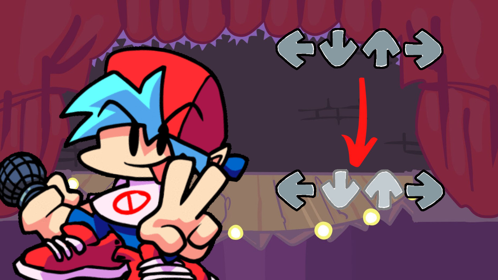
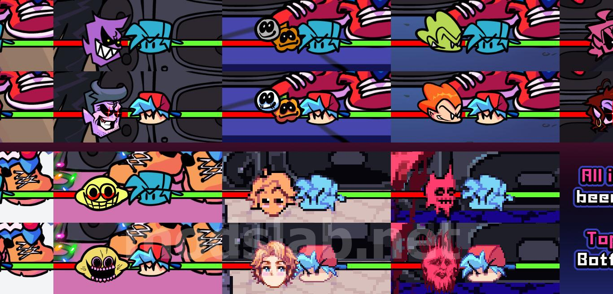
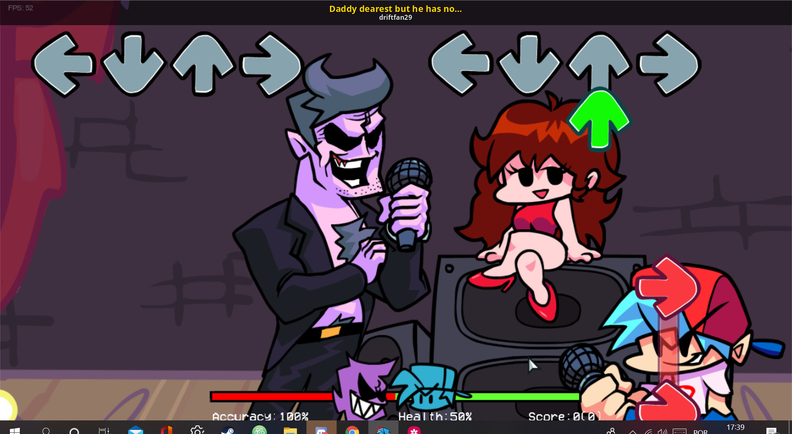
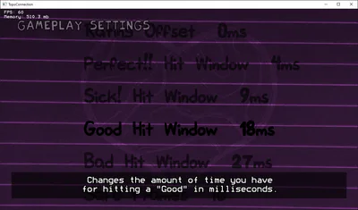
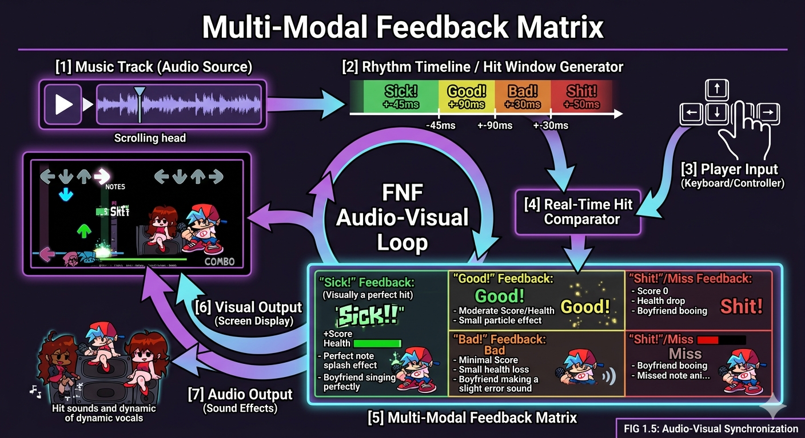

Friday Night Funkin'
-
Genres:
-
Platforms:
-
Editions:
Friday Night Funkin' (FNF) is an open-source rhythm game initially developed during the Ludum Dare 47 game jam. Players control "Boyfriend" and must defeat various characters in singing and rapping contests. The gameplay is heavily inspired by late 90s and early 2000s rhythm arcade games like Dance Dance Revolution and Flash hits like PaRappa the Rapper.
Unlike games that rely on spatial navigation or strategic cross-hair targeting, FNF relies exclusively on a vertical scrolling interface where visual information must be converted into high-precision, rhythmic keystrokes. It presents a fascinating case study in cognitive load management, as the sheer density of incoming notes at higher difficulties tests the absolute physiological limits of human visual-motor reaction times.

The absolute focal point of the interface. Four static arrows sit at the top (or bottom) of the screen, representing the Left, Down, Up, and Right inputs.When a note aligns perfectly with the receptor, the character on screen reacts with a specific animation and vocal snippet, creating a seamless loop between the player's tactile input and the character's performance.

Located at the bottom of the screen, the health system operates as a zero-sum tug-of-war. Missing notes pushes the bar in favor of the opponent, while hitting notes claws it back. Character icons react dynamically (e.g., sweating or looking bruised) based on the bar's position.

The characters themselves bounce to the BPM of the track. When notes are hit, they strike specific poses corresponding to the directional arrows, reinforcing the audio-visual feedback loop and tying the interface logic to the game's diegetic world.
In a VSRG, the traditional spatial targeting of Fitts's Law is replaced by temporal targeting. The target is not a location on the screen, but a precise millisecond in time. The difficulty is scaled not by shrinking the arrows, but by increasing the scroll speed and chart density, thereby drastically reducing the player's visual reaction window.
A player's accuracy is calculated by taking the absolute difference between the exact millisecond a note crosses the strumline and the exact millisecond the user presses the corresponding key. A delta close to zero registers as a "Sick!" hit, while larger deltas drop to "Good," "Bad," or "Shit," penalizing the health bar.

The Strumline. This zone commands 90% of the player's visual attention. Periphery vision tracks incoming patterns to anticipate the next immediate keystrokes.
The Health Bar and Score. Checked rapidly during brief lulls in the chart to assess current performance and survival status.
The background art, opponent animations, and lighting flashes. These elements establish the "vibe" but become visual noise that players must actively learn to filter out during dense gameplay sections.
A breakdown of the synchronized loop between audio perception, visual processing, and high-frequency keystroke execution in a 4-panel system.
Visual processing of the scroll speed and note color to identify the incoming arrow sequence.
Aligning the visual cue with the auditory beat of the instrumental track to determine the exact hit window.
Physical keypress execution (Left, Down, Up, Right) utilizing muscle memory and finger independence.
Processing immediate feedback (a missed note sound or health drop) to re-calibrate rhythm if off-beat.
Rhythm games live and die by their feedback latency. FNF
employs a robust, multi-layered system to ensure that every
keystroke feels inherently connected to the music being
generated.
This matrix spans three core channels: audio,
visual, and haptic-like responsiveness. On the audio side,
every input is synchronized to beat-aligned sound cues,
reinforcing timing accuracy through immediate sonic
confirmation.
Visually, note hit effects, character
animations, and UI flashes react in frame-perfect alignment
with player actions, creating a strong sense of
cause-and-effect between pressing a key and seeing the
performance respond.
Finally, ultra-low input buffering and
consistent frame pacing simulate a tactile snappiness, the game “feels” responsive in the
player's fingers, reducing perceived latency and deepening
immersion.

When a note is hit successfully, the vocal track plays seamlessly. If a note is missed, a harsh "record scratch" or miss sound interrupts the flow, and the player character's vocal track cuts out entirely, creating an immediate, jarring audio penalty.
Notes explode with an illuminating splash animation upon a perfect hit, and a text overlay (e.g., "Sick!") pops up. Missed notes cause the player character model to display a grimacing, blue-tinted animation, making the failure visually obvious.
Due to the speed of the game, players often adopt specific hand placements on the keyboard (like 'DFJK' or 'ASUpRight') to maximize ergonomics. The tactile feedback of mechanical keyboard switches becomes an integral part of the player's internal metronome.
In high-speed rhythm games, the engine's input polling rate dictates the fairness of the interface. Early iterations of the FNF engine (HaxeFlixel base) faced significant criticism for dropped inputs during high-density sections. A robust rhythm engine must poll keystrokes independently of the visual framerate to ensure that a 15ms timing window isn't artificially lost to a dropped visual frame.
The layout of the four arrows (Left, Down, Up, Right) perfectly maps to spatial directions, which creates immediate cognitive congruence for new players. Furthermore, the game charts often employ "Pitch Mapping," where higher-pitched vocal sounds are mapped to the "Up" arrow, and lower-pitched sounds map to "Down." This synthesizes auditory and spatial data, making the chart feel like a playable instrument rather than a random sequence of buttons.
As track BPM increases, the interface introduces massive Intrinsic Load. The visual system becomes bottlenecked by the sheer amount of data pouring down the screen, forcing the player to abandon tracking individual notes and switch to pattern-level processing.
| Extrinsic Organization | Intrinsic Focus |
|---|---|
Scroll Speed (Note Velocity)Counter-intuitively, faster scroll speeds can reduce Extrinsic Load by spacing out notes, preventing dense clusters from overlapping and becoming unreadable. |
Pattern Recognition (Chunking)Recognizing sequences like "Jacks" (repeated single notes) or "Streams" (continuous alternating notes) rather than parsing them individually. |
Visual ClarityThe high-contrast color coding of arrows (Purple, Blue, Green, Red) enables instant peripheral identification without needing to look directly at the shape. |
Rhythmic PredictionInternalizing the song's beat so heavily that the player can close their eyes for brief moments and execute inputs purely on musical intuition. |
The challenge in VSRG design is striking the balance between "chart reading" and "musical feeling." If the chart is too dense, it becomes a pure visual-reaction test; if it is well-mapped, it induces a powerful flow state of rhythmic synchronization.
A comprehensive breakdown of the FNF rhythm interface paradigm. Evaluating the friction between accessibility, visual flair, and competitive mechanical rigor.
| System Strengths Positive_Vectors | System Weaknesses Negative_Vectors |
|---|---|
|
01_READABILITY
High-Contrast DesignThe stark color palette and thick outlines of the arrows ensure that the critical UI elements remain perfectly legible against chaotic, shifting backgrounds. |
01_ENGINE_LIMITS
Input ReliabilityLegacy versions of the base game suffered from inconsistent hit detection and an unforgiving penalty system for "ghost tapping," frustrating users aiming for precision scores. |
|
02_EXTENSIBILITY
Open-Source ModdingThe accessible framework allows the community to completely overhaul the UI/UX, resulting in highly advanced custom engines (like Psych Engine) that fix legacy input issues and add robust customization. |
02_CLUTTER
Visual Noise ExploitationMany difficult charts artificially inflate cognitive load by intentionally distracting the player through screen-shaking, flashing lights, or moving the strumline, shifting the challenge from pure rhythm to visual interference survival. |
Friday Night Funkin' proves that a straightforward 4-panel system remains one of the most effective ways to translate musical flow into interactive HCI. While its mechanical depth lies in parsing dense visual information at high speeds, the true success of its UX is the seamless, satisfying feedback loop connecting the player's keystrokes directly to the rhythm of the game's iconic soundtrack.